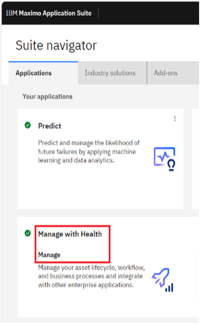
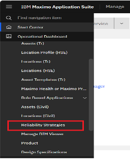
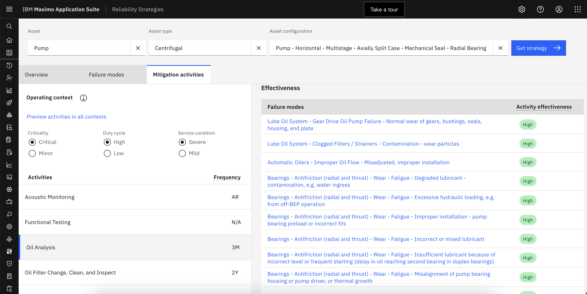
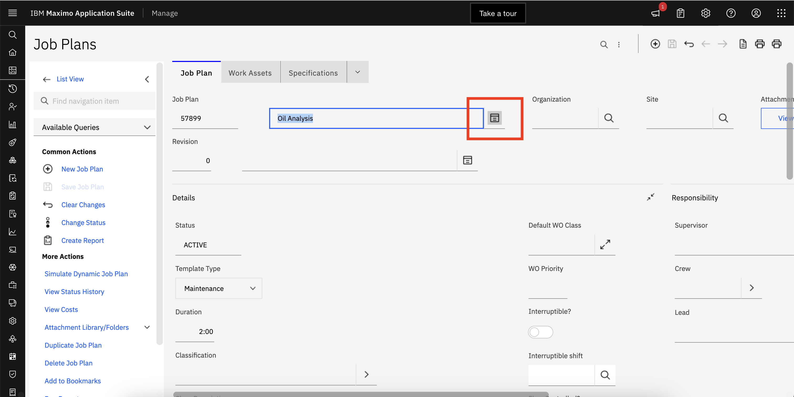

Reliability Centered Maintenance
Note
This lab is under development. Not all steps are complete or accurate.
Asset Maintenance is an essential aspect of business operations, and it influences a significant part of operational expenses. Maintenance tasks may be preventive, predictive, or involve inspections to identify or monitor flaws. A preventive maintenance approach is often less selective and based on a fixed schedule as per industry best practices or the OEM. With the application of effective reliability strategies, these maintenance and inspection tasks can be more focused and centered around improving efficiency, reliability and safety of assets.
RCM is an analysis-based approach which focuses on identifying asset functions, failure causes, failure modes and effects analysis (FMEA) for individual assets. RCM helps you prioritize, optimize and assign maintenance activities to increase asset life and decrease functional failure in the most cost-efficient way possible.
Implementing RCM requires teams to perform RCM analysis for identifying critical asset functions, desired performance standards, possible failure scenarios, causes of those failure scenarios, and consequences of each failure scenarios for individual assets which requires significant time, cost and resources.
A dedicated RCM / FMEA application which includes a reliability strategy library is available with Maximo Application Suite which makes it easy to select and apply reliability strategies for critical assets and speeds time to value.
Available Asset Strategies
As a reliability engineer for a water treatment plant, I want to implement RCM to improve asset availability and efficiency, and maintain my business-critical assets such as centrifugal pumps. I’ve noticed that the lube oil tends to degrade over time. I want to put a strategy in place to regularly monitor the lube oil to prevent wear on the pump.
In this exercise you will understand what asset classes and maintenance strategies are available in Maximo Reliability Strategies.
-
Log into MAS and select the
Manage with Healthapplication.  -
Navigate to
Assetsfrom left nav bar.

-
Select
Reliability Strategiesto redirect to theReliability Strategiesapplication.

The Reliability Strategy library accelerates application of RCM0with a list of 58,000+ failure modes and corresponding mitigation activities already defined for individual assets. I can use these to create preventive maintenance tasks and job plans.
- Click on the
Assetbox and a list of assets will be available for selection.

Filter on Pump Asset Strategies
With the MAS Reliability Strategies application, I have a prebuilt library of assets from which I can filter and select assets for RCM0analysis based on Asset type and Asset configuration to identify and select business critical assets.
In this exercise you will understand what pump asset class maintenance strategies are available for preventive maintenance.
- Select Asset:
Pump - Select Asset type:
Centrifugal - Select Asset configuration:
Pump - Horizontal - Multistage - Axially Split Case - Mechanical Seal - Radial Bearings-Oil Lubed(the 2nd one on the list).

Select a Strategy
This action returns failure modes and corresponding mitigation activities to get FMEA / PM and Job plans for selected asset from the library, which eliminates weeks of work to analyze RCM strategies with technicians, operators and supervisors and speeds up time to value.
In this case, the Get strategy action provides a list of failure modes and corresponding mitigation activities for centrifugal pumps which I can analyze further to optimize our preventive maintenance tasks.
- Navigate to the
Failure modestab to see the list of all possible failure modes for centrifugal pumps. - Expand
Lube Oilto see corresponding failure mechanisms. - Expand
Degradedfailure mechanism to see corresponding failure influences. - Select
Normal Wearfailure influence. Select this as thePump Asset Strategy
Select a Operational Context
What level of preventive maintenance is required depends on the utilization of the asset and it's location. This operational context is an important factor to consider in deciding on a preveventive maintenance plan. This helps me also identify the critical affects I should monitor for my asset. Stressors that can cause or worsen the failure, universal or conditional degradation time, failure effects, repair time as well as discovery opportunities to detect the functional failure.
- Select the pump operational context by scrolling to bottom right side of the page to see all the mitigation activities with its effectiveness listed for the
Normal Wearforfailure influence. - Navigate to
Mitigation activitiestab. This will list all themitigation activitiesfor my asset. - Scroll to bottom of
mitigation activitieslist and selectOil Analysis - Navigate to right side of the page where
preventive maintenanceandjob plandetails are available along withfrequency and labor hours for Oil Analysismitigation activity.
These activities are the reliability strategies that I can apply to mitigate respective failure modes.
Customize the Operational Context
I can also fine tune these mitigation activities as per our operating context based on criticality, duty cycle and service condition of selected asset.
- Click on the circle
iicon to the right ofOperating contexticon and click onView details for this assetlink within the popup. - Close the dialog box and click
Preview activities in all contextsoption. - Close the dialog box and toggle the
Duty Cycleradio button from High to Low. - In the right side of the page scroll down to
Effectivenesssection. 
Changes in frequency for Oil Analysis activity is suggested based on the change in duty cycle.
Criticality, Duty cycle and Service condition are select-able and together these make up the Operating context to determine the best reliability strategy for maintenance of my asset.
This lists all the failure modes that Oil Analysis mitigation activity can address which provides comprehensive details as to how multiple failure modes and mitigation activities can be tied together.
Apply the Maintenance Plan
Note
This following exercise may have already been completed. Skip these steps and simply review the completed job plan and PM.
I can copy the job plan and preventative maintenance details and navigate directly from the Mitigation activities tab to create respective job plans and PM tasks for my assets.
- Copy the
Maintenance Planby clicking on thecopy iconto the right ofJob plan details. - Click
Open Job Planslink within the pop up. - Apply filter for
job plan “57899”to list job plan created for pump devices.  - Click on the
long descriptionicon to see the text pasted fromReliability Strategies
The job plan details will be copied and pop up will be displayed with link to navigate to Job Plans in Manage. I can paste the copied job plan details to create new job plan. I have created Job plan 57899 for centrifugal pumps detailed tasks using Reliability Strategies.
- Paste the
Maintenance Planby clicking on thecopyicon to the right ofPreventative maintenance (PM) detailsfromMitigation activitiestab. - Click
Open Preventative Maintenancelink within the pop up.
- Apply filter for asset
PMPDEVICEto list all the PMs created for pump devices.
- Open
PM “1030”and click on thelong descriptionicon to see the text pasted fromReliability Strategies. - Paste the copied
Preventive Maintenance detailsto create PM tasks for my assets. - Preventive Maintenance details will be copied and pop up will be displayed with link to navigate to
Preventive Maintenancemenu in Manage
With RCM analysis I have created multiple preventive maintenance task with the right frequency and precise labor hours required to mitigate each failure mode for centrifugal pump devices. Implementing RCM based PM and job plans optimizes overall asset reliability & efficiency as well as makes it much faster and simpler for our field technicians to perform PM tasks.
Summary
As the Reliability Engineer, maintaining the grid or other critical infrastructure assets, I was able to use IBM Maximo Application Suite Reliability Strategies to identify assets failure modes, identify effects to measure to monitor my asset performance and identify the best preventive maintenance plans for specific asset classes and operating contexts that reflect my business needs. This will help me later setup and calculate asset health and risk to make it easier to identify and then investigate and action those assets to prevent a failure and unplanned downtown saving thousands of dollars, and maintaining the integrity of the grid.
Now that I have implemented a job plan and a Preventive Maintenance work order template using Reliability Strategies, I’m going to turn it over to the operational support engineer who can monitor all of our business critical assets as part of RCM.